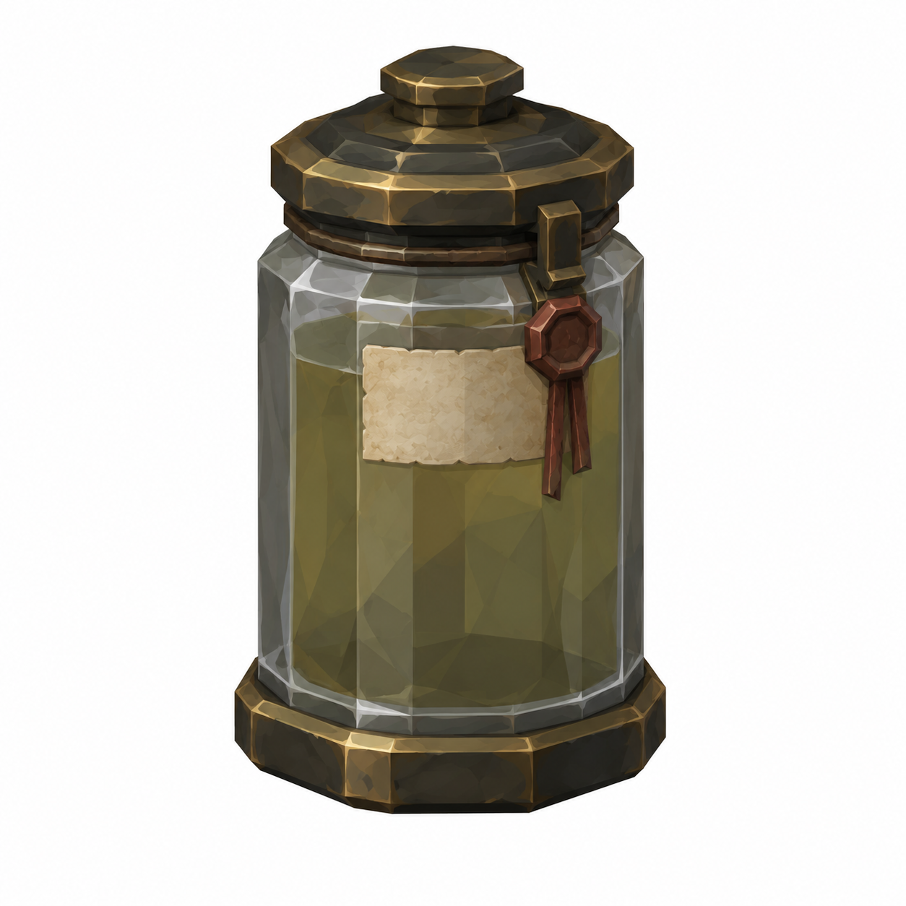
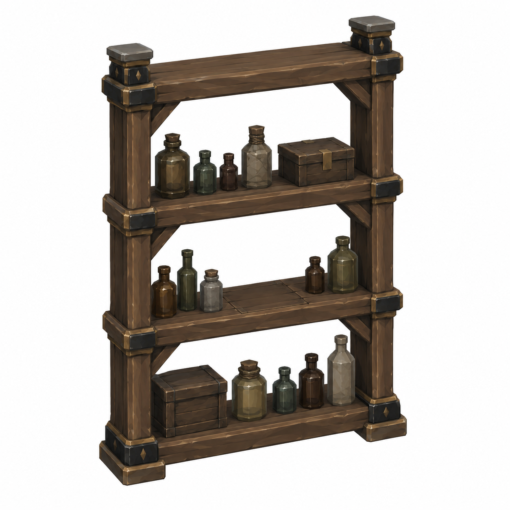
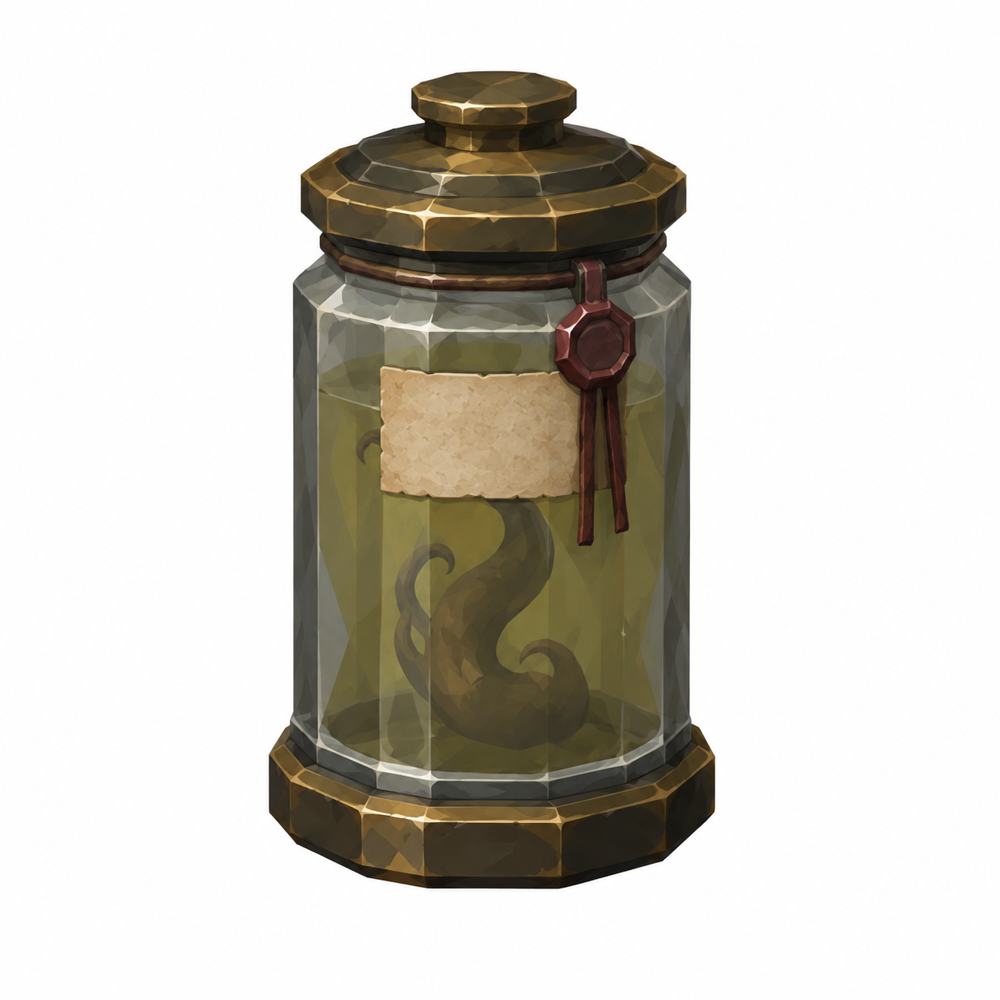
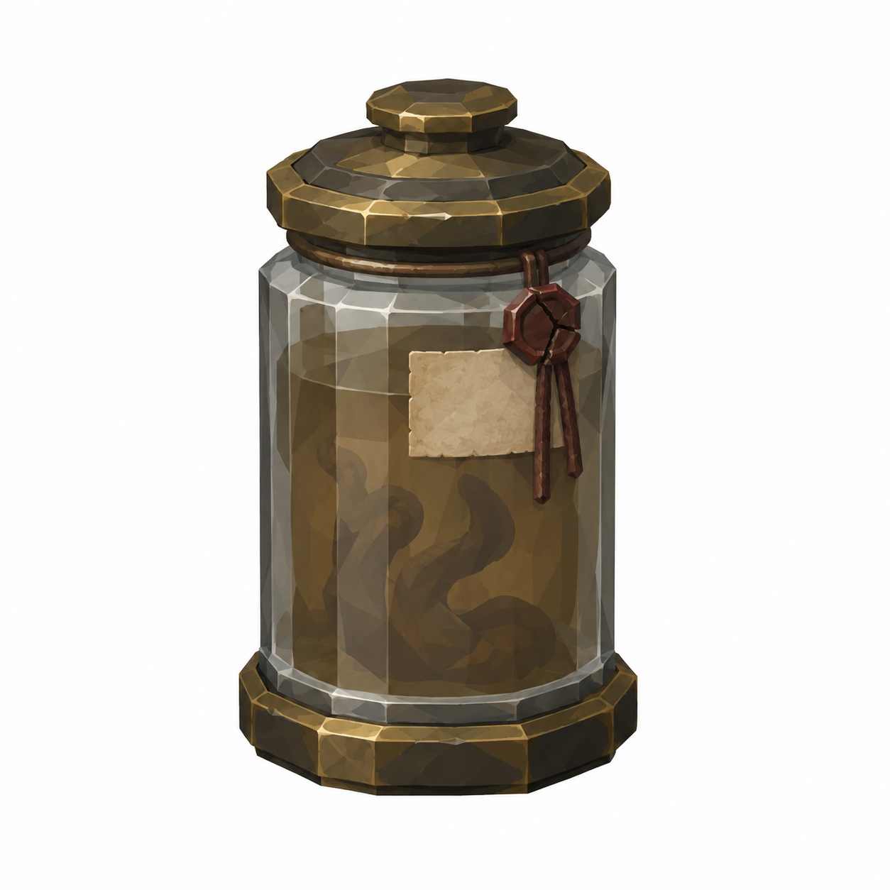

DecoyJar
Ø0.22 ×0.35m; tag0.12 ×0.08

Yeni revizyon taslağı; nihai görsel onayı bekleniyor.
Mustafa yorumlarına göre ölçü ve eksik parça taslakları. Onay durumu: yeni görseller kullanıcı ve Mustafa onayını bekliyor.
16 gerçek SpecimenNames kaynak kodu bu workspace'de bulunamadı. Atlas yalnız boş4×4 düzen prototipi; isim uydurulmadı. 1–2m kamera okunurluğu ve Socket_Jar placement/gameplay pending.
Tam ölçüler ve kaynak yorumlar · Ölçekli ölçü zarfı paftası · Gerçek isimleri bekleyen boş etiket atlası düzeni
Ø0.22 ×0.35m; tag0.12 ×0.08

Yeni revizyon taslağı; nihai görsel onayı bekleniyor.
1.20 ×0.45 ×1.90m; Socket_Jar1.00m

Yeni revizyon taslağı; nihai görsel onayı bekleniyor.
Ø0.22 ×0.35m; tag0.12 ×0.08; intact

Ø0.22 ×0.35m; cracked seal/murky brown fluid

45° ayrı referans, beyaz fon, faceted düz boya. Ölçüler brief hedefidir; raster görselden kesin CAD ölçümü çıkarılmaz. Önceki onaylı dil korunur. Tripo/Unity/rig/placement yapılmadı. Runtime okunurluk, sockets ve fit kontrolleri ilgili lane'de.